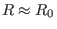
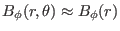
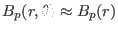
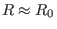
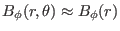
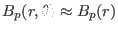
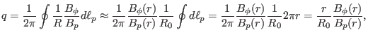

Next: parameters Up: Misc contents Previous: Misc contents
For a large aspect-ratio, circular cross section tokamak, the  on a
magnetic surface is nearly constant,
. The poloidal angle
dependence of the magnetic field can be neglected, i.e.,
, and
. Using these, the
safety factor in Eq. (29) is approximated to
on a
magnetic surface is nearly constant,
. The poloidal angle
dependence of the magnetic field can be neglected, i.e.,
, and
. Using these, the
safety factor in Eq. (29) is approximated to
|  | (503) |